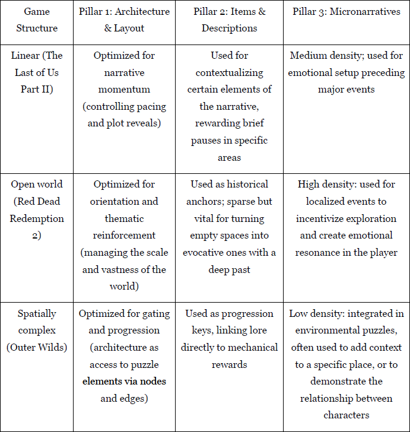

Design Takeaways
-
Key Idea:
How can environments feel like they exist independently of the player? -
Key Insights:
- Players construct narrative through environmental clues rather than explicit storytelling
- Spatial layout and object placement can imply history, culture, and recent events
- Consistency between world elements creates the perception of an inhabited space
-
Application:
I apply these principles in my level design work by structuring environments to guide player attention and communicate narrative through spatial layout, object placement, and visual cues, rather than relying on explicit exposition. -
Framework Application Across Different Game Structures:
This framework can be applied differently depending on the structure of the game, as shown below:
